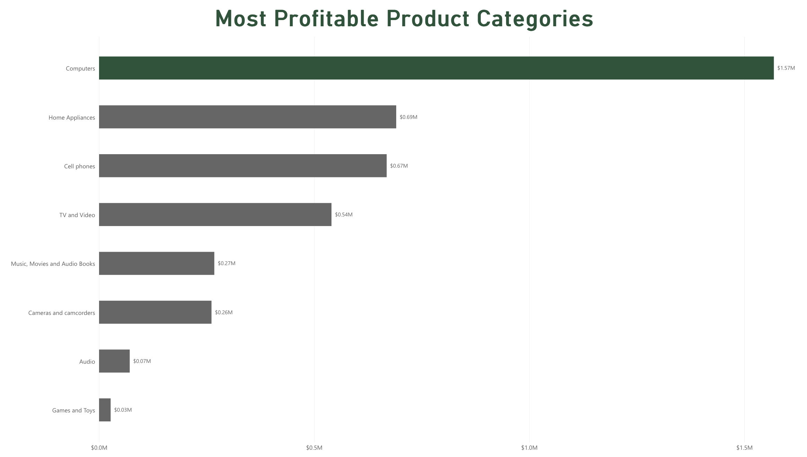

Power BI Sales Data Analysis - Ashton Hatch
What are the most profitable product categories?

This chart compares the total profit generated by each product category. Profit is different from revenue because it takes product costs into account.
Computers were the most profitable category, generating about $1.57 million in profit. Home Appliances came next at about $690,000, which is followed by Cell Phones at approximately $670,000.
Games and Toys generated the least profit out of the categories shown. These results help identify which product categories contribute the most to the company's profits.
Previous Page Next Page